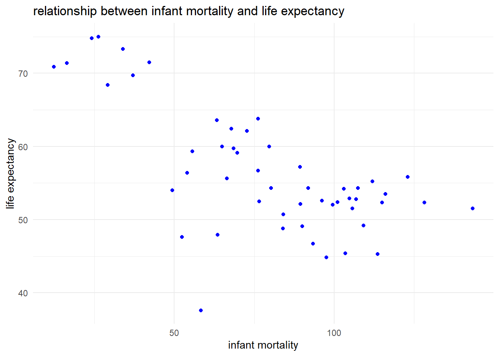
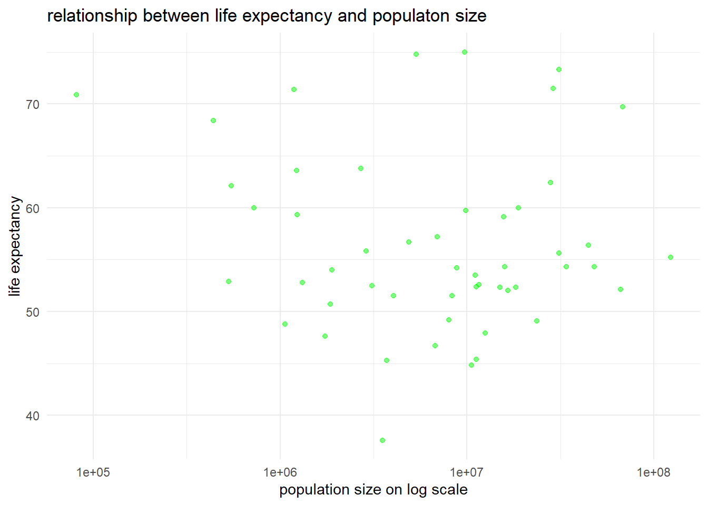

#look at help file for gapminder datahelp(gapminder)
starting httpd help server ... done
#get an overview of data structurestr(gapminder)
'data.frame': 10545 obs. of 9 variables:
$ country : Factor w/ 185 levels "Albania","Algeria",..: 1 2 3 4 5 6 7 8 9 10 ...
$ year : int 1960 1960 1960 1960 1960 1960 1960 1960 1960 1960 ...
$ infant_mortality: num 115.4 148.2 208 NA 59.9 ...
$ life_expectancy : num 62.9 47.5 36 63 65.4 ...
$ fertility : num 6.19 7.65 7.32 4.43 3.11 4.55 4.82 3.45 2.7 5.57 ...
$ population : num 1636054 11124892 5270844 54681 20619075 ...
$ gdp : num NA 1.38e+10 NA NA 1.08e+11 ...
$ continent : Factor w/ 5 levels "Africa","Americas",..: 4 1 1 2 2 3 2 5 4 3 ...
$ region : Factor w/ 22 levels "Australia and New Zealand",..: 19 11 10 2 15 21 2 1 22 21 ...
#get a summary of data structuresummary(gapminder)
country year infant_mortality life_expectancy
Albania : 57 Min. :1960 Min. : 1.50 Min. :13.20
Algeria : 57 1st Qu.:1974 1st Qu.: 16.00 1st Qu.:57.50
Angola : 57 Median :1988 Median : 41.50 Median :67.54
Antigua and Barbuda: 57 Mean :1988 Mean : 55.31 Mean :64.81
Argentina : 57 3rd Qu.:2002 3rd Qu.: 85.10 3rd Qu.:73.00
Armenia : 57 Max. :2016 Max. :276.90 Max. :83.90
(Other) :10203 NA's :1453
fertility population gdp continent
Min. :0.840 Min. :3.124e+04 Min. :4.040e+07 Africa :2907
1st Qu.:2.200 1st Qu.:1.333e+06 1st Qu.:1.846e+09 Americas:2052
Median :3.750 Median :5.009e+06 Median :7.794e+09 Asia :2679
Mean :4.084 Mean :2.701e+07 Mean :1.480e+11 Europe :2223
3rd Qu.:6.000 3rd Qu.:1.523e+07 3rd Qu.:5.540e+10 Oceania : 684
Max. :9.220 Max. :1.376e+09 Max. :1.174e+13
NA's :187 NA's :185 NA's :2972
region
Western Asia :1026
Eastern Africa : 912
Western Africa : 912
Caribbean : 741
South America : 684
Southern Europe: 684
(Other) :5586
#determine type of objective gapminder isclass(gapminder)
[1] "data.frame"
processing data
#assign African countries to a new objectafricadata=filter(gapminder,continent=="Africa")#get an overview of data structure of africadatastr(africadata)
'data.frame': 2907 obs. of 9 variables:
$ country : Factor w/ 185 levels "Albania","Algeria",..: 2 3 18 22 26 27 29 31 32 33 ...
$ year : int 1960 1960 1960 1960 1960 1960 1960 1960 1960 1960 ...
$ infant_mortality: num 148 208 187 116 161 ...
$ life_expectancy : num 47.5 36 38.3 50.3 35.2 ...
$ fertility : num 7.65 7.32 6.28 6.62 6.29 6.95 5.65 6.89 5.84 6.25 ...
$ population : num 11124892 5270844 2431620 524029 4829291 ...
$ gdp : num 1.38e+10 NA 6.22e+08 1.24e+08 5.97e+08 ...
$ continent : Factor w/ 5 levels "Africa","Americas",..: 1 1 1 1 1 1 1 1 1 1 ...
$ region : Factor w/ 22 levels "Australia and New Zealand",..: 11 10 20 17 20 5 10 20 10 10 ...
#get a summary of data structuresummary(africadata)
country year infant_mortality life_expectancy
Algeria : 57 Min. :1960 Min. : 11.40 Min. :13.20
Angola : 57 1st Qu.:1974 1st Qu.: 62.20 1st Qu.:48.23
Benin : 57 Median :1988 Median : 93.40 Median :53.98
Botswana : 57 Mean :1988 Mean : 95.12 Mean :54.38
Burkina Faso: 57 3rd Qu.:2002 3rd Qu.:124.70 3rd Qu.:60.10
Burundi : 57 Max. :2016 Max. :237.40 Max. :77.60
(Other) :2565 NA's :226
fertility population gdp continent
Min. :1.500 Min. : 41538 Min. :4.659e+07 Africa :2907
1st Qu.:5.160 1st Qu.: 1605232 1st Qu.:8.373e+08 Americas: 0
Median :6.160 Median : 5570982 Median :2.448e+09 Asia : 0
Mean :5.851 Mean : 12235961 Mean :9.346e+09 Europe : 0
3rd Qu.:6.860 3rd Qu.: 13888152 3rd Qu.:6.552e+09 Oceania : 0
Max. :8.450 Max. :182201962 Max. :1.935e+11
NA's :51 NA's :51 NA's :637
region
Eastern Africa :912
Western Africa :912
Middle Africa :456
Northern Africa :342
Southern Africa :285
Australia and New Zealand: 0
(Other) : 0
#create a data frame that only contains infant_mortality and life_expectancy from africadatainfant_mortality_longevity=select(africadata,infant_mortality,life_expectancy)#create a data frame that only contains population and life_expectancypop_longevity=select(africadata,population,life_expectancy)#create a data frame that only contains infant_mortality and life_expectancy from africadatainfant_mortality_longevity=select(africadata,infant_mortality,life_expectancy)#create a data frame that only contains population and life_expectancypop_longevity=select(africadata,population,life_expectancy)
plotting
#plot life expectancy as a function of infant mortalityggplot(data=infant_mortality_longevity)+geom_point(mapping=aes(x=infant_mortality,y=life_expectancy),color="blue")+labs(title="life expectancy and infant mortality",x="infant mortality",y="life expectancy")+theme_minimal()
#plot life expectancy as a function of population sizeggplot(data=pop_longevity)+geom_point(mapping=aes(x=population, y=life_expectancy),color="green")+scale_x_log10()+labs(title="life expectancy and infant mortality",x="infant_mortality",y="life expectancy")+theme_minimal()
#filter out the year without missing valuesfilter(africadata,is.na(infant_mortality))
country year infant_mortality life_expectancy fertility
1 Cape Verde 1960 NA 50.12 6.89
2 Chad 1960 NA 40.95 6.25
3 Djibouti 1960 NA 45.77 6.46
4 Equatorial Guinea 1960 NA 37.69 5.51
5 Eritrea 1960 NA 39.03 6.90
6 Gabon 1960 NA 38.83 4.38
7 Guinea 1960 NA 35.71 6.10
8 Guinea-Bissau 1960 NA 43.14 5.83
9 Niger 1960 NA 36.82 7.05
10 South Africa 1960 NA 49.01 6.17
11 Angola 1961 NA 36.53 7.35
12 Cape Verde 1961 NA 50.27 6.92
13 Chad 1961 NA 41.35 6.27
14 Comoros 1961 NA 44.47 6.85
15 Congo, Dem. Rep. 1961 NA 44.25 6.02
16 Djibouti 1961 NA 46.28 6.49
17 Equatorial Guinea 1961 NA 38.04 5.52
18 Eritrea 1961 NA 39.35 6.87
19 Ethiopia 1961 NA 38.35 6.88
20 Gabon 1961 NA 39.15 4.46
21 Guinea-Bissau 1961 NA 43.39 5.77
22 Madagascar 1961 NA 42.54 7.30
23 Mozambique 1961 NA 38.79 6.60
24 Namibia 1961 NA 47.70 6.17
25 Niger 1961 NA 36.97 7.08
26 Nigeria 1961 NA 41.00 6.35
27 South Africa 1961 NA 49.40 6.14
28 Angola 1962 NA 37.08 7.39
29 Cape Verde 1962 NA 50.43 6.95
30 Chad 1962 NA 41.76 6.29
31 Comoros 1962 NA 44.89 6.90
32 Congo, Dem. Rep. 1962 NA 44.61 6.03
33 Djibouti 1962 NA 46.79 6.53
34 Equatorial Guinea 1962 NA 38.38 5.53
35 Eritrea 1962 NA 39.69 6.84
36 Ethiopia 1962 NA 38.94 6.88
37 Gabon 1962 NA 39.56 4.54
38 Guinea-Bissau 1962 NA 43.64 5.67
39 Madagascar 1962 NA 43.12 7.30
40 Mozambique 1962 NA 39.40 6.60
41 Namibia 1962 NA 48.31 6.18
42 Niger 1962 NA 37.10 7.12
43 South Africa 1962 NA 49.78 6.10
44 Angola 1963 NA 37.63 7.41
45 Cape Verde 1963 NA 50.59 6.98
46 Chad 1963 NA 42.17 6.30
47 Comoros 1963 NA 45.32 6.94
48 Congo, Dem. Rep. 1963 NA 44.98 6.05
49 Djibouti 1963 NA 47.30 6.56
50 Equatorial Guinea 1963 NA 38.73 5.55
51 Eritrea 1963 NA 40.04 6.81
52 Ethiopia 1963 NA 39.49 6.87
53 Gabon 1963 NA 40.07 4.62
54 Guinea-Bissau 1963 NA 43.89 5.52
55 Madagascar 1963 NA 43.70 7.30
56 Mozambique 1963 NA 39.98 6.60
57 Namibia 1963 NA 48.90 6.20
58 Niger 1963 NA 37.24 7.15
59 South Africa 1963 NA 50.14 6.05
60 Angola 1964 NA 38.18 7.43
61 Cape Verde 1964 NA 50.77 6.99
62 Chad 1964 NA 42.58 6.32
63 Comoros 1964 NA 45.75 6.98
64 Congo, Dem. Rep. 1964 NA 45.36 6.07
65 Djibouti 1964 NA 47.80 6.60
66 Equatorial Guinea 1964 NA 39.08 5.57
67 Eritrea 1964 NA 40.41 6.78
68 Ethiopia 1964 NA 39.36 6.87
69 Gabon 1964 NA 40.70 4.69
70 Guinea-Bissau 1964 NA 44.15 5.32
71 Madagascar 1964 NA 44.28 7.30
72 Namibia 1964 NA 49.48 6.22
73 Niger 1964 NA 37.36 7.19
74 South Africa 1964 NA 50.52 5.98
75 Angola 1965 NA 38.74 7.43
76 Cape Verde 1965 NA 51.00 6.99
77 Chad 1965 NA 43.01 6.34
78 Comoros 1965 NA 46.18 7.00
79 Congo, Dem. Rep. 1965 NA 45.77 6.09
80 Djibouti 1965 NA 48.33 6.63
81 Equatorial Guinea 1965 NA 39.44 5.60
82 Eritrea 1965 NA 40.81 6.75
83 Ethiopia 1965 NA 38.13 6.86
84 Gabon 1965 NA 41.42 4.77
85 Guinea-Bissau 1965 NA 44.39 5.14
86 Namibia 1965 NA 50.05 6.24
87 Niger 1965 NA 37.49 7.22
88 South Africa 1965 NA 50.91 5.91
89 Angola 1966 NA 39.28 7.42
90 Cape Verde 1966 NA 51.32 6.99
91 Chad 1966 NA 43.48 6.36
92 Comoros 1966 NA 46.63 7.03
93 Congo, Dem. Rep. 1966 NA 46.20 6.11
94 Djibouti 1966 NA 48.90 6.67
95 Equatorial Guinea 1966 NA 39.78 5.62
96 Eritrea 1966 NA 41.22 6.73
97 Gabon 1966 NA 42.21 4.83
98 Guinea-Bissau 1966 NA 44.63 5.05
99 Namibia 1966 NA 50.61 6.26
100 Niger 1966 NA 37.61 7.26
101 South Africa 1966 NA 51.30 5.84
102 Angola 1967 NA 39.84 7.40
103 Cape Verde 1967 NA 51.75 6.98
104 Chad 1967 NA 43.98 6.39
105 Comoros 1967 NA 47.10 7.04
106 Congo, Dem. Rep. 1967 NA 46.66 6.14
107 Djibouti 1967 NA 49.53 6.70
108 Equatorial Guinea 1967 NA 40.13 5.64
109 Eritrea 1967 NA 41.66 6.71
110 Gabon 1967 NA 43.06 4.90
111 Guinea-Bissau 1967 NA 44.86 5.09
112 South Africa 1967 NA 51.68 5.77
113 Angola 1968 NA 40.39 7.38
114 Cape Verde 1968 NA 52.32 6.97
115 Chad 1968 NA 44.54 6.43
116 Comoros 1968 NA 47.58 7.06
117 Congo, Dem. Rep. 1968 NA 47.14 6.16
118 Djibouti 1968 NA 50.23 6.74
119 Equatorial Guinea 1968 NA 40.48 5.66
120 Eritrea 1968 NA 42.10 6.69
121 Gabon 1968 NA 43.90 4.96
122 Guinea-Bissau 1968 NA 45.09 5.30
123 South Africa 1968 NA 52.04 5.70
124 Angola 1969 NA 40.95 7.34
125 Comoros 1969 NA 48.09 7.06
126 Djibouti 1969 NA 50.99 6.77
127 Equatorial Guinea 1969 NA 40.82 5.67
128 Gabon 1969 NA 44.74 5.02
129 Guinea-Bissau 1969 NA 45.29 5.64
130 South Africa 1969 NA 52.41 5.64
131 Djibouti 1970 NA 51.75 6.80
132 Equatorial Guinea 1970 NA 41.17 5.68
133 Gabon 1970 NA 45.55 5.08
134 Guinea-Bissau 1970 NA 45.50 6.07
135 South Africa 1970 NA 52.77 5.59
136 Angola 1971 NA 42.06 7.26
137 Djibouti 1971 NA 52.51 6.83
138 Equatorial Guinea 1971 NA 41.52 5.68
139 Gabon 1971 NA 46.35 5.14
140 Guinea-Bissau 1971 NA 45.71 6.49
141 South Africa 1971 NA 53.11 5.54
142 Angola 1972 NA 42.62 7.23
143 Djibouti 1972 NA 53.20 6.84
144 Equatorial Guinea 1972 NA 41.87 5.68
145 Gabon 1972 NA 47.13 5.21
146 Guinea-Bissau 1972 NA 45.91 6.81
147 South Africa 1972 NA 53.44 5.48
148 Angola 1973 NA 43.17 7.21
149 Djibouti 1973 NA 53.83 6.83
150 Equatorial Guinea 1973 NA 42.21 5.68
151 Gabon 1973 NA 47.90 5.28
152 Guinea-Bissau 1973 NA 46.12 6.98
153 South Africa 1973 NA 53.77 5.42
154 Angola 1974 NA 43.71 7.19
155 Djibouti 1974 NA 54.38 6.82
156 Equatorial Guinea 1974 NA 42.56 5.68
157 Gabon 1974 NA 48.68 5.34
158 Guinea-Bissau 1974 NA 46.33 6.99
159 Angola 1975 NA 44.22 7.19
160 Djibouti 1975 NA 54.85 6.78
161 Equatorial Guinea 1975 NA 42.91 5.67
162 Gabon 1975 NA 49.45 5.41
163 Guinea-Bissau 1975 NA 46.54 6.87
164 Angola 1976 NA 44.68 7.19
165 Equatorial Guinea 1976 NA 43.28 5.68
166 Gabon 1976 NA 50.23 5.48
167 Angola 1977 NA 45.12 7.19
168 Equatorial Guinea 1977 NA 43.65 5.68
169 Gabon 1977 NA 51.01 5.54
170 Angola 1978 NA 45.50 7.19
171 Equatorial Guinea 1978 NA 44.04 5.69
172 Angola 1979 NA 45.84 7.20
173 Equatorial Guinea 1979 NA 44.44 5.71
174 Equatorial Guinea 1980 NA 44.85 5.73
175 Equatorial Guinea 1981 NA 45.26 5.75
176 Algeria 2016 NA 76.50 NA
177 Angola 2016 NA 60.00 NA
178 Benin 2016 NA 62.60 NA
179 Botswana 2016 NA 60.13 NA
180 Burkina Faso 2016 NA 61.20 NA
181 Burundi 2016 NA 61.40 NA
182 Cameroon 2016 NA 59.70 NA
183 Cape Verde 2016 NA 73.10 NA
184 Central African Republic 2016 NA 51.04 NA
185 Chad 2016 NA 58.01 NA
186 Comoros 2016 NA 68.20 NA
187 Congo, Dem. Rep. 2016 NA 61.51 NA
188 Congo, Rep. 2016 NA 61.50 NA
189 Cote d'Ivoire 2016 NA 59.71 NA
190 Djibouti 2016 NA 64.51 NA
191 Egypt 2016 NA 71.70 NA
192 Equatorial Guinea 2016 NA 61.00 NA
193 Eritrea 2016 NA 60.80 NA
194 Ethiopia 2016 NA 65.70 NA
195 Gabon 2016 NA 66.81 NA
196 Gambia 2016 NA 68.20 NA
197 Ghana 2016 NA 65.80 NA
198 Guinea 2016 NA 59.60 NA
199 Guinea-Bissau 2016 NA 55.90 NA
200 Kenya 2016 NA 65.20 NA
201 Lesotho 2016 NA 48.86 NA
202 Liberia 2016 NA 64.63 NA
203 Libya 2016 NA 73.21 NA
204 Madagascar 2016 NA 63.70 NA
205 Malawi 2016 NA 60.90 NA
206 Mali 2016 NA 60.40 NA
207 Mauritania 2016 NA 69.80 NA
208 Mauritius 2016 NA 74.70 NA
209 Morocco 2016 NA 74.80 NA
210 Mozambique 2016 NA 58.12 NA
211 Namibia 2016 NA 64.30 NA
212 Niger 2016 NA 61.30 NA
213 Nigeria 2016 NA 65.51 NA
214 Rwanda 2016 NA 66.10 NA
215 Senegal 2016 NA 65.60 NA
216 Seychelles 2016 NA 74.20 NA
217 Sierra Leone 2016 NA 59.07 NA
218 South Africa 2016 NA 61.40 NA
219 Sudan 2016 NA 67.80 NA
220 Swaziland 2016 NA 53.88 NA
221 Tanzania 2016 NA 64.91 NA
222 Togo 2016 NA 61.90 NA
223 Tunisia 2016 NA 77.60 NA
224 Uganda 2016 NA 61.91 NA
225 Zambia 2016 NA 57.10 NA
226 Zimbabwe 2016 NA 61.69 NA
population gdp continent region
1 202316 NA Africa Western Africa
2 3002596 750173439 Africa Middle Africa
3 83636 NA Africa Eastern Africa
4 252115 NA Africa Middle Africa
5 1407631 NA Africa Eastern Africa
6 499189 887289809 Africa Middle Africa
7 3577413 NA Africa Western Africa
8 616407 NA Africa Western Africa
9 3395212 1020197091 Africa Western Africa
10 17396367 38336071006 Africa Southern Africa
11 5367287 NA Africa Middle Africa
12 205958 NA Africa Western Africa
13 3061423 760658941 Africa Middle Africa
14 191828 NA Africa Eastern Africa
15 15637715 4451156989 Africa Middle Africa
16 88499 NA Africa Eastern Africa
17 255100 NA Africa Middle Africa
18 1441297 NA Africa Eastern Africa
19 22671131 NA Africa Eastern Africa
20 504174 1018309175 Africa Middle Africa
21 623413 NA Africa Western Africa
22 5223621 2130711083 Africa Eastern Africa
23 7643290 NA Africa Eastern Africa
24 617282 NA Africa Southern Africa
25 3493636 1066579260 Africa Western Africa
26 46144154 12861030560 Africa Western Africa
27 17850045 39810250010 Africa Southern Africa
28 5465905 NA Africa Middle Africa
29 210866 NA Africa Western Africa
30 3122357 801431143 Africa Middle Africa
31 194960 NA Africa Eastern Africa
32 16041247 5394833319 Africa Middle Africa
33 94200 NA Africa Eastern Africa
34 257940 NA Africa Middle Africa
35 1476321 NA Africa Eastern Africa
36 23221331 NA Africa Eastern Africa
37 509806 1094165180 Africa Middle Africa
38 629973 NA Africa Western Africa
39 5352674 2179101018 Africa Eastern Africa
40 7799396 NA Africa Eastern Africa
41 632658 NA Africa Southern Africa
42 3596613 1176209886 Africa Western Africa
43 18322335 42269436973 Africa Southern Africa
44 5565808 NA Africa Middle Africa
45 216913 NA Africa Western Africa
46 3184775 788612621 Africa Middle Africa
47 198205 NA Africa Eastern Africa
48 16461914 5676119396 Africa Middle Africa
49 100622 NA Africa Eastern Africa
50 260990 NA Africa Middle Africa
51 1512671 NA Africa Eastern Africa
52 23798378 NA Africa Eastern Africa
53 516270 1160826485 Africa Middle Africa
54 636593 NA Africa Western Africa
55 5486593 2158848417 Africa Eastern Africa
56 7961458 NA Africa Eastern Africa
57 648668 NA Africa Southern Africa
58 3703159 1287105652 Africa Western Africa
59 18809939 45386200940 Africa Southern Africa
60 5665701 NA Africa Middle Africa
61 223854 NA Africa Western Africa
62 3247798 768811034 Africa Middle Africa
63 201665 NA Africa Eastern Africa
64 16903899 5537609393 Africa Middle Africa
65 107584 NA Africa Eastern Africa
66 264743 NA Africa Middle Africa
67 1550297 NA Africa Eastern Africa
68 24396965 NA Africa Eastern Africa
69 523793 1213695790 Africa Middle Africa
70 643962 NA Africa Western Africa
71 5625401 2244393192 Africa Eastern Africa
72 665297 NA Africa Southern Africa
73 3811813 1288792274 Africa Western Africa
74 19308166 48989793258 Africa Southern Africa
75 5765025 NA Africa Middle Africa
76 231427 NA Africa Western Africa
77 3310921 773471780 Africa Middle Africa
78 205412 NA Africa Eastern Africa
79 17369859 5592838673 Africa Middle Africa
80 114963 NA Africa Eastern Africa
81 269427 NA Africa Middle Africa
82 1589187 NA Africa Eastern Africa
83 25013551 NA Africa Eastern Africa
84 532512 1314837134 Africa Middle Africa
85 652566 NA Africa Western Africa
86 682553 NA Africa Southern Africa
87 3921581 1377973629 Africa Western Africa
88 19813947 53347940265 Africa Southern Africa
89 5863568 NA Africa Middle Africa
90 239765 NA Africa Western Africa
91 3373563 759494431 Africa Middle Africa
92 209536 NA Africa Eastern Africa
93 17861860 5971780635 Africa Middle Africa
94 122868 NA Africa Eastern Africa
95 275470 NA Africa Middle Africa
96 1629333 NA Africa Eastern Africa
97 542562 1374110052 Africa Middle Africa
98 662597 NA Africa Western Africa
99 700316 NA Africa Southern Africa
100 4032210 1372702919 Africa Western Africa
101 20325230 55715759234 Africa Southern Africa
102 5962831 NA Africa Middle Africa
103 248733 NA Africa Western Africa
104 3436227 765321282 Africa Middle Africa
105 214038 NA Africa Eastern Africa
106 18378189 5912914485 Africa Middle Africa
107 131403 NA Africa Eastern Africa
108 282445 NA Africa Middle Africa
109 1670821 NA Africa Eastern Africa
110 553829 1430656781 Africa Middle Africa
111 673893 NA Africa Western Africa
112 20843785 59725342237 Africa Southern Africa
113 6066094 NA Africa Middle Africa
114 257478 NA Africa Western Africa
115 3500778 761822089 Africa Middle Africa
116 218794 NA Africa Eastern Africa
117 18913177 6169103240 Africa Middle Africa
118 140461 NA Africa Eastern Africa
119 288701 NA Africa Middle Africa
120 1713846 NA Africa Eastern Africa
121 565878 1466549111 Africa Middle Africa
122 686155 NA Africa Western Africa
123 21374931 62205953376 Africa Southern Africa
124 6177703 NA Africa Middle Africa
125 223629 NA Africa Eastern Africa
126 149891 NA Africa Eastern Africa
127 292014 NA Africa Middle Africa
128 578114 1585088962 Africa Middle Africa
129 698917 NA Africa Western Africa
130 21926165 65139570532 Africa Southern Africa
131 159667 NA Africa Eastern Africa
132 290905 NA Africa Middle Africa
133 590119 1722664256 Africa Middle Africa
134 711828 104038537 Africa Western Africa
135 22502502 68558449204 Africa Southern Africa
136 6437645 NA Africa Middle Africa
137 169370 NA Africa Eastern Africa
138 284915 NA Africa Middle Africa
139 601734 1899387747 Africa Middle Africa
140 724863 99969624 Africa Western Africa
141 23106806 71492066360 Africa Southern Africa
142 6587647 NA Africa Middle Africa
143 179212 NA Africa Eastern Africa
144 274906 NA Africa Middle Africa
145 613129 2114720779 Africa Middle Africa
146 738117 106342548 Africa Western Africa
147 23736489 72675108212 Africa Southern Africa
148 6750215 NA Africa Middle Africa
149 190536 NA Africa Eastern Africa
150 262399 NA Africa Middle Africa
151 624625 2330050819 Africa Middle Africa
152 751512 107522836 Africa Western Africa
153 24384538 75997832835 Africa Southern Africa
154 6923749 NA Africa Middle Africa
155 205157 NA Africa Eastern Africa
156 249587 NA Africa Middle Africa
157 636702 3250120203 Africa Middle Africa
158 764974 112425062 Africa Western Africa
159 7107334 NA Africa Middle Africa
160 224182 NA Africa Eastern Africa
161 238240 NA Africa Middle Africa
162 649719 3873822005 Africa Middle Africa
163 778482 121245465 Africa Western Africa
164 7299508 NA Africa Middle Africa
165 228491 NA Africa Middle Africa
166 663774 5253884186 Africa Middle Africa
167 7501320 NA Africa Middle Africa
168 220352 NA Africa Middle Africa
169 678786 4592835688 Africa Middle Africa
170 7717139 NA Africa Middle Africa
171 215284 NA Africa Middle Africa
172 7952882 NA Africa Middle Africa
173 215014 NA Africa Middle Africa
174 220605 NA Africa Middle Africa
175 232934 NA Africa Middle Africa
176 NA NA Africa Northern Africa
177 NA NA Africa Middle Africa
178 NA NA Africa Western Africa
179 NA NA Africa Southern Africa
180 NA NA Africa Western Africa
181 NA NA Africa Eastern Africa
182 NA NA Africa Middle Africa
183 NA NA Africa Western Africa
184 NA NA Africa Middle Africa
185 NA NA Africa Middle Africa
186 NA NA Africa Eastern Africa
187 NA NA Africa Middle Africa
188 NA NA Africa Middle Africa
189 NA NA Africa Western Africa
190 NA NA Africa Eastern Africa
191 NA NA Africa Northern Africa
192 NA NA Africa Middle Africa
193 NA NA Africa Eastern Africa
194 NA NA Africa Eastern Africa
195 NA NA Africa Middle Africa
196 NA NA Africa Western Africa
197 NA NA Africa Western Africa
198 NA NA Africa Western Africa
199 NA NA Africa Western Africa
200 NA NA Africa Eastern Africa
201 NA NA Africa Southern Africa
202 NA NA Africa Western Africa
203 NA NA Africa Northern Africa
204 NA NA Africa Eastern Africa
205 NA NA Africa Eastern Africa
206 NA NA Africa Western Africa
207 NA NA Africa Western Africa
208 NA NA Africa Eastern Africa
209 NA NA Africa Northern Africa
210 NA NA Africa Eastern Africa
211 NA NA Africa Southern Africa
212 NA NA Africa Western Africa
213 NA NA Africa Western Africa
214 NA NA Africa Eastern Africa
215 NA NA Africa Western Africa
216 NA NA Africa Eastern Africa
217 NA NA Africa Western Africa
218 NA NA Africa Southern Africa
219 NA NA Africa Northern Africa
220 NA NA Africa Southern Africa
221 NA NA Africa Eastern Africa
222 NA NA Africa Western Africa
223 NA NA Africa Northern Africa
224 NA NA Africa Eastern Africa
225 NA NA Africa Eastern Africa
226 NA NA Africa Eastern Africa
#create a new data frame containg the data for the year 2000year2000=filter(africadata,year==2000)#get a overview of new data frame year2000str(year2000)
'data.frame': 51 obs. of 9 variables:
$ country : Factor w/ 185 levels "Albania","Algeria",..: 2 3 18 22 26 27 29 31 32 33 ...
$ year : int 2000 2000 2000 2000 2000 2000 2000 2000 2000 2000 ...
$ infant_mortality: num 33.9 128.3 89.3 52.4 96.2 ...
$ life_expectancy : num 73.3 52.3 57.2 47.6 52.6 46.7 54.3 68.4 45.3 51.5 ...
$ fertility : num 2.51 6.84 5.98 3.41 6.59 7.06 5.62 3.7 5.45 7.35 ...
$ population : num 31183658 15058638 6949366 1736579 11607944 ...
$ gdp : num 5.48e+10 9.13e+09 2.25e+09 5.63e+09 2.61e+09 ...
$ continent : Factor w/ 5 levels "Africa","Americas",..: 1 1 1 1 1 1 1 1 1 1 ...
$ region : Factor w/ 22 levels "Australia and New Zealand",..: 11 10 20 17 20 5 10 20 10 10 ...
#get a summary of year2000summary(year2000)
country year infant_mortality life_expectancy
Algeria : 1 Min. :2000 Min. : 12.30 Min. :37.60
Angola : 1 1st Qu.:2000 1st Qu.: 60.80 1st Qu.:51.75
Benin : 1 Median :2000 Median : 80.30 Median :54.30
Botswana : 1 Mean :2000 Mean : 78.93 Mean :56.36
Burkina Faso: 1 3rd Qu.:2000 3rd Qu.:103.30 3rd Qu.:60.00
Burundi : 1 Max. :2000 Max. :143.30 Max. :75.00
(Other) :45
fertility population gdp continent
Min. :1.990 Min. : 81154 Min. :2.019e+08 Africa :51
1st Qu.:4.150 1st Qu.: 2304687 1st Qu.:1.274e+09 Americas: 0
Median :5.550 Median : 8799165 Median :3.238e+09 Asia : 0
Mean :5.156 Mean : 15659800 Mean :1.155e+10 Europe : 0
3rd Qu.:5.960 3rd Qu.: 17391242 3rd Qu.:8.654e+09 Oceania : 0
Max. :7.730 Max. :122876723 Max. :1.329e+11
region
Eastern Africa :16
Western Africa :16
Middle Africa : 8
Northern Africa : 6
Southern Africa : 5
Australia and New Zealand: 0
(Other) : 0
#plotting the relationship between life expectancy and infant mortality for year 2000year2000%>%ggplot()+geom_point(aes(y=life_expectancy,x=infant_mortality),color="blue")+labs(x="infant mortality", y="life expectancy", title="relationship between infant mortality and life expectancy")+theme_minimal()

#plotting the relationship between life expectancy and population size for year 2000year2000%>%ggplot()+geom_point(aes(y=life_expectancy,x=population),color="green",alpha=0.5)+scale_x_log10()+labs(x="population size on log scale",y="life expectancy", title="relationship between life expectancy and populaton size")+theme_minimal()

build a linear regression model to predict life expectancy
#build a linear model using lm function and fit life expectancy as outcome, and infant mortality as the predictorlm1=lm(life_expectancy~infant_mortality,data=year2000)#summary of linear regression model 1summary(lm1)
Call:
lm(formula = life_expectancy ~ infant_mortality, data = year2000)
Residuals:
Min 1Q Median 3Q Max
-22.6651 -3.7087 0.9914 4.0408 8.6817
Coefficients:
Estimate Std. Error t value Pr(>|t|)
(Intercept) 71.29331 2.42611 29.386 < 2e-16 ***
infant_mortality -0.18916 0.02869 -6.594 2.83e-08 ***
---
Signif. codes: 0 '***' 0.001 '**' 0.01 '*' 0.05 '.' 0.1 ' ' 1
Residual standard error: 6.221 on 49 degrees of freedom
Multiple R-squared: 0.4701, Adjusted R-squared: 0.4593
F-statistic: 43.48 on 1 and 49 DF, p-value: 2.826e-08
#build a linear model using lm function and fit life expectancy as outcome, and population size as the predictorlm2=lm(life_expectancy~population,data=year2000)#summary of linear regression model 1broom::tidy(lm2,conf.int=TRUE)%>% knitr::kable(digits=3)
term
estimate
std.error
statistic
p.value
conf.low
conf.high
(Intercept)
55.931
1.468
38.097
0.000
52.981
58.881
population
0.000
0.000
0.505
0.616
0.000
0.000
based on the p_value for each fit, we can see that infant mortality can significantly predict life expectancy whereas population size can not predict the life expectancy